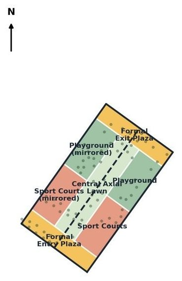
A · Central Spine
15 / 30
Conventional and symmetric. Courts land against the mosque-facing edge with no buffer, and programme is mirrored onto the harshest edge.
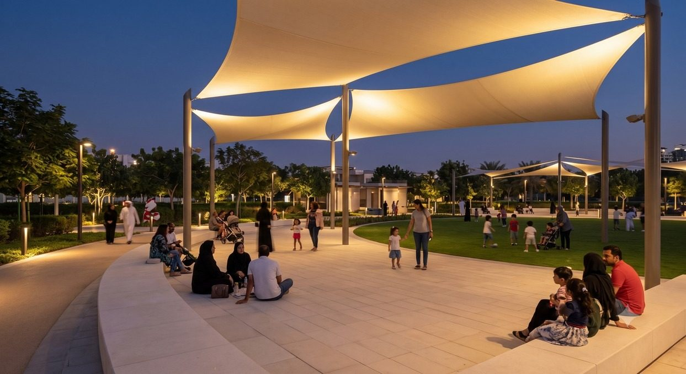
A concept and preliminary design for Al Safa 2 Park, a loved 14,841 m² neighbourhood park in Dubai, built from verified site data rather than park convention, with every AI output treated as a claim to check.
Al Safa 2 is already used every day, surrounded by a school, a physiotherapy and rehabilitation centre, a mosque, shops and family homes. The finding that shaped every later decision: its four edges get measurably different sun, wind and neighbour exposure, verified by geodetic cross-referencing instead of assumed.
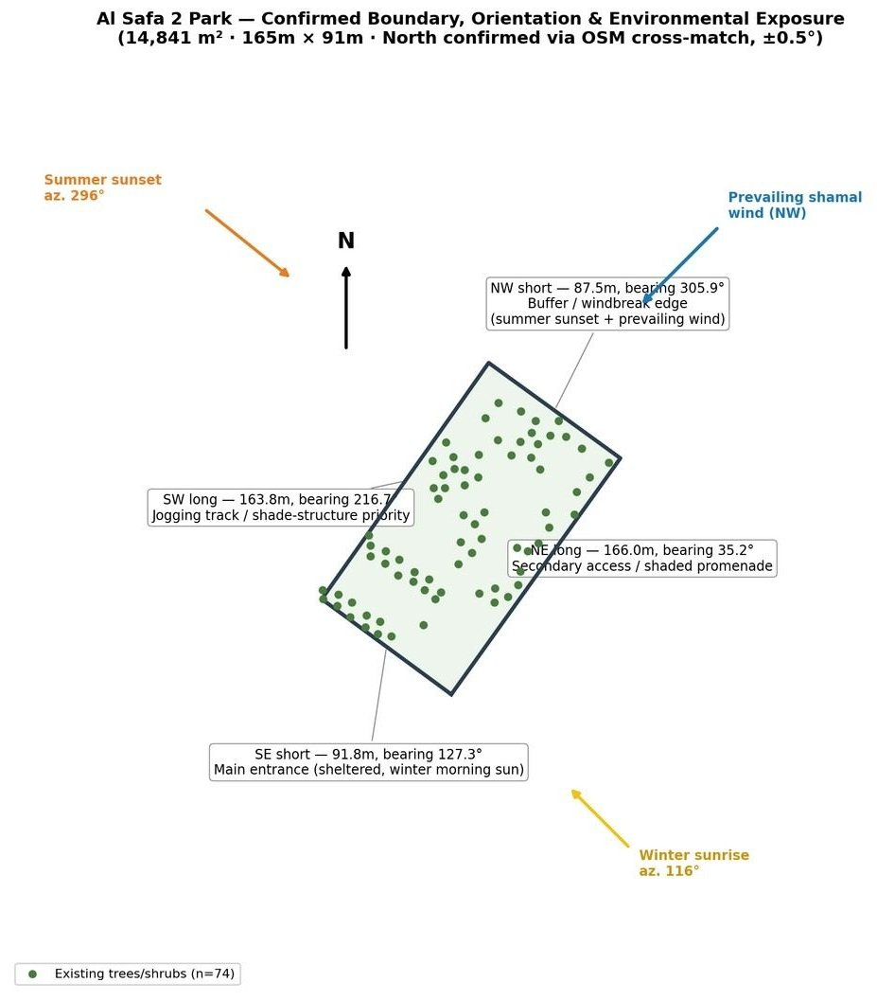
| Area | 14,841 m², within 1% of the brief's 15,000 m² |
|---|---|
| Shape | Rectangle: 166.0 m (NE) · 163.8 m (SW) · 87.5 m (NW) · 91.8 m (SE) |
| Orientation | True north from an OpenStreetMap cross-match, ±1.5° |
| Trees | 74 surveyed: 62 kept, 12 flagged for likely removal |
| Neighbours | Mosque (SW, 89 m) · Physiotherapy & rehab centre (SE, 46 m) · School (S corner) · Shopping centre: left unresolved rather than guessed |
| Climate | Hot desert: 40–49 °C summer highs, NW shamal wind, 9–10.5 hours of sun a day |
| Community signal | A public review reported courts restricted to nearby residents only, answered in the activation strategy |
"The Threshold Park" treats each edge as a threshold between the park and a different part of the neighbourhood's day. Two common alternatives were generated from the same geometry and scored honestly; one of their strengths was kept.

Conventional and symmetric. Courts land against the mosque-facing edge with no buffer, and programme is mirrored onto the harshest edge.
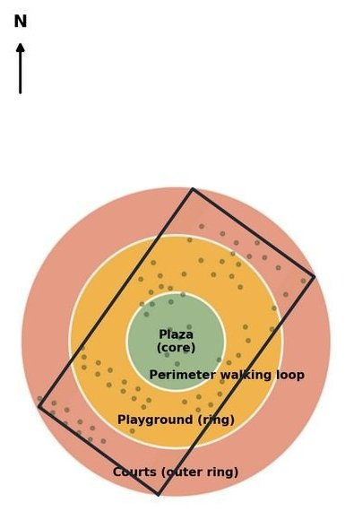
Its continuous perimeter loop is a real strength, adopted into the final design. But courts still touch the mosque edge, and circles waste a rectangular site.
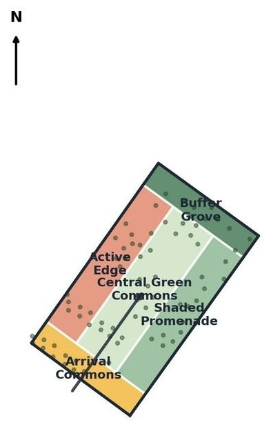
Derived directly from the confirmed constraints the alternatives were scored on.
Sheltered entrance plaza, gateway and drop-off, closest to the school and the rehab centre.
3 m jogging and walking path under five shade canopies, with nature play.
Toddler (200 m²) and junior (300 m²) playgrounds, event lawn, picnic grove, plaza.
Graduated: quiet turf facing the mosque → shaded seating → padel and FIBA 3x3 courts.
Windbreak planting against the harshest edge, restroom and a service gate.
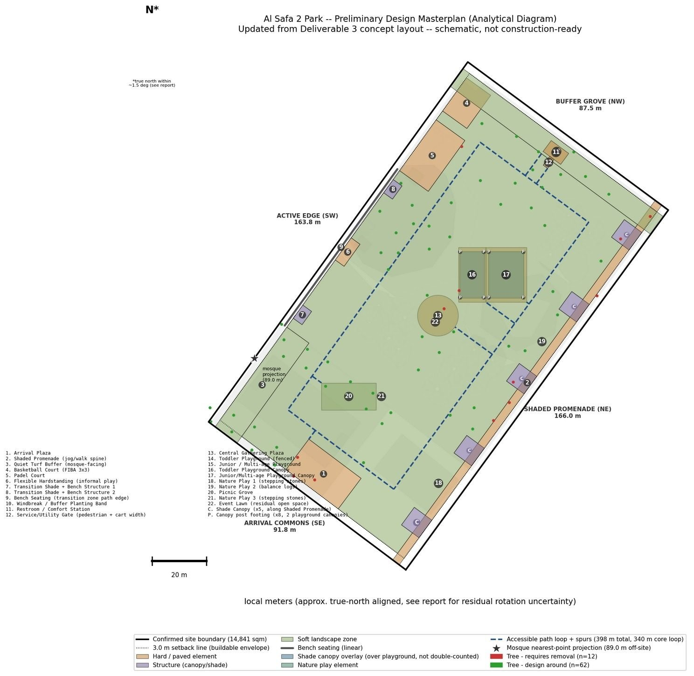
3 m perimeter setback · hard surface and structures · lawn, planting and buffer.
A 340.2 m level loop plus 7 spurs (397.9 m in total) reaches every element, both playgrounds and the restroom included. Each connection was re-checked in the geometry, endpoint by endpoint.
Research for the materials palette showed Dubai Municipality requires 70–80% shade over active play areas. The masterplan had 0%. Two canopies sized to the requirement now give 76.5% (toddler) and 73.7% (junior), verified by polygon clipping.
Public UAE market rates applied to the confirmed quantities give AED 3.3M–7.5M for the priced scope, 9–22% of the AED 35M budget. It's a floor, not a tender figure: walls, full electrical, drainage and canopy engineering are not priced.
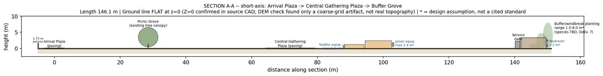
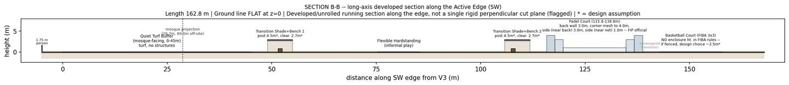
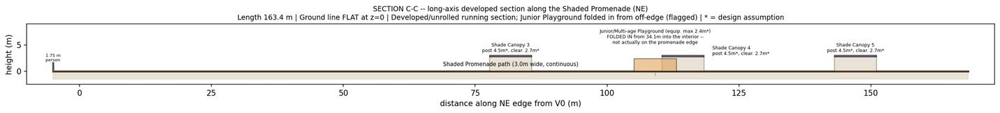
Renders were produced from a written grounding brief (real species, real materials, real dimensions) and each was checked against the masterplan before use. They are illustrative, not construction drawings.
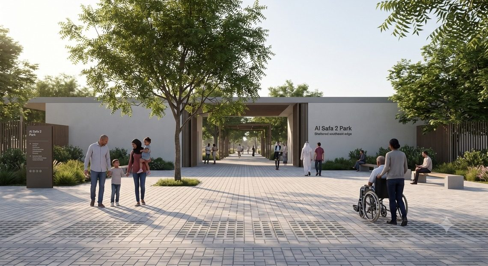
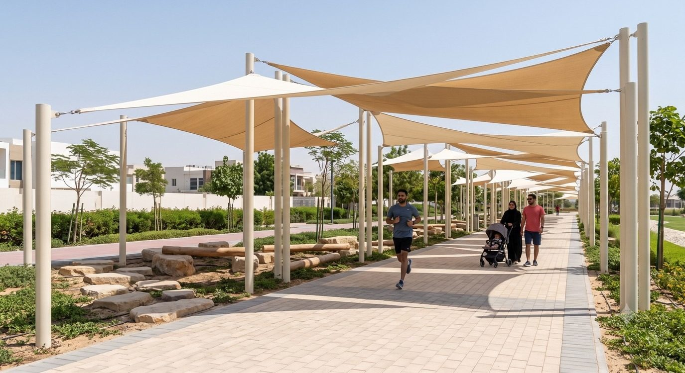
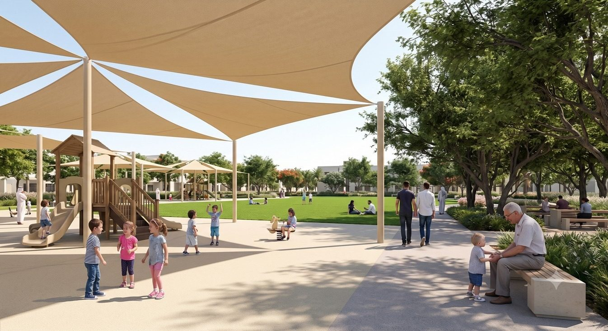
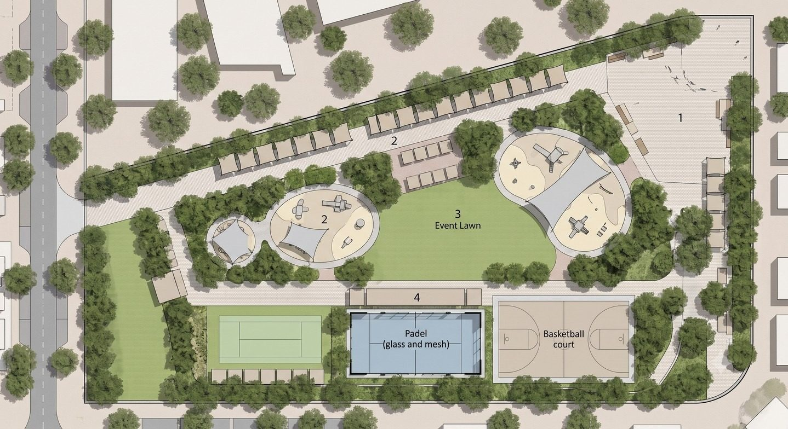
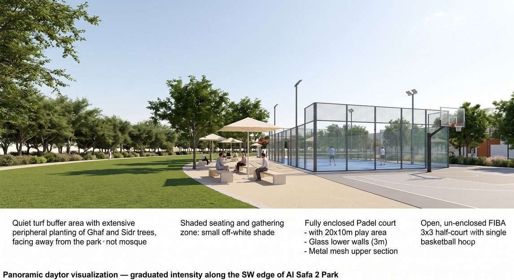
From school via the Arrival Plaza and Promenade to the courts, weekday afternoons.
46 m from the rehab centre; early-morning therapeutic walks on the level, shaded loop.
To the shade-compliant toddler and junior playgrounds, then the picnic grove.
Straight to the padel and basketball courts on the Active Edge.
Near the mosque: the quiet turf buffer keeps prayer times calm by design.
The reported "residents only" rule is answered with a published access policy, time blocks instead of identity blocks, and an optional transparent booking display, proposed for operations, not claimed as built.
Ghaf, Sidr, Neem and Samar trees; light, permeable pavers; light EPDM play surfacing; real irrigated turf (artificial turf reaches 60–80 °C); recycled-water irrigation; 84% of trees kept. Al Sa'fat is applied only to the restroom, the one building it actually governs.
The competition's premise is that AI and data can make a design more defensible. The value here came less from generating faster than from cross-checking outputs against each other and against the raw geometry.
| Tool | Role |
|---|---|
| Claude | Strategy, narrative, spatial and data reasoning, independent verification, compiling the deliverables |
| Claude Code | DWG/DXF parsing, geometry, OpenStreetMap queries, GIS analysis, layout generation |
| Gemini Pro / Nano Banana | Renders, masterplan visualisation, materials mood boards |
| GPT Pro | Critique and proofreading only |
| Issue | How it was caught |
|---|---|
| Three ambiguous boundary tracings in the CAD file | Pixel analysis matched a walkability circle from the municipality's own locator map |
| Setback strip mislabelled (~1,139 m² vs 1,488.6 m²) | Independent polygon-inset recalculation |
| Three accessible path spurs silently dropped from the export | The same total differed across three output files; connectivity then re-derived from geometry |
| Padel side-wall height cited as ~1 m (really ~3 m) | Checked against several FIP-derived sources |
| 0% playground shade vs a 70–80% requirement | Cross-checking one deliverable against an earlier "finished" one |
| US playground standard (CPSC) cited instead of EN 1176/1177 | Verified against standards recognised by DM, Trakhees and KHDA |
| Overview render with rounded corners and garbled legend | Visual QA against the confirmed rectangular geometry |
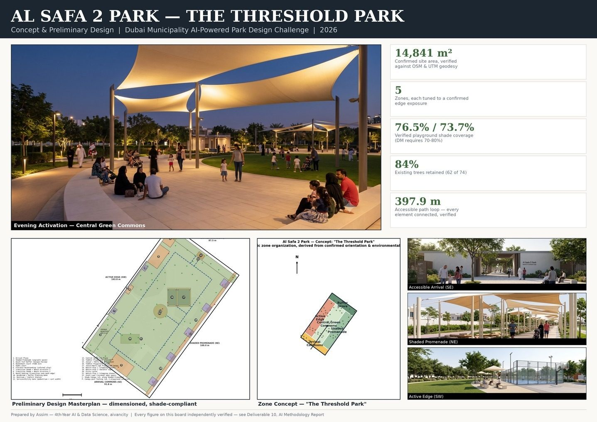
The full submission, as sent. Every figure on this page comes from these documents.